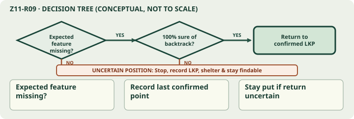

Z11-R09 · Navigation, weather and rescue · Reconstruction draft
Recognize position uncertainty and record last known point
Stop forward travel the instant map-to-ground confidence breaks and preserve a usable starting point for relocation or rescue.
Lineage · B014 reconstruction · r01 slot R09 (original B014-P09 missing)
When it applies · Any moment a hiker cannot match surrounding terrain to the map; reconstructs missing B014-P09.
Equipment · Paper/offline map, notebook or phone note, watch and whistle.

Actions
- Admit position uncertainty immediately the first time an expected junction, bridge or slope fails to appear within your expected time window.[T06, N09]
- Stop on stable ground, record the exact last place and time you positively verified your location, and list every direction and landmark seen since that point.[T06, N09, ED]
- Avoid guessing shortcuts off-trail to force a match; only backtrack along unmistakable tracks/trails if you are 100% certain of the return path, otherwise stay put and prepare to signal.[T06, N09]
Failure recognition · Walking another mile down an unverified spur trail hoping a familiar sign will appear, multiplying the search area.[T06, N09]
Verify · Write or state aloud the last confirmed landmark, elapsed walking time since leaving it and your stay-or-backtrack decision criteria.[T06, N09, ED]
Stop or change course · If uncertainty persists after calm map comparison or visibility/daylight drops, stop moving, shelter in place and contact rescue with your last verified point.[T06, N09, E05]
Evidence and editorial notes
- E05 · NWS · What To Do If You're Caught in a Winter Storm (current web edition)
- Section: Outside and find shelter · Conditions: Cold, wet or windy winter conditions
Support: Block wind, stay dry and keep off cold ground. Keep exposure reduction separate from making a fire.
Limitations: Improvised windbreaks do not provide rated thermal protection or snow-load capacity. · Conflicting evidence: None; aligns with CDC-H.
Editorial note: Separates wind, ground, and moisture heat-loss pathways. · Specialist reviewer: Cold-weather shelter specialist
Primary source · checked 2026-11-24 - N09 · NPS · Outdoor Emergency Plan (current web edition)
- Section: Outdoor Emergency Plan > Signaling, Lost-Person Protocol and SAR Handoff · Conditions: Lost or overdue party awaiting search and rescue
Support: Stay put once lost unless immediate danger requires moving to nearby safer ground; preserve footprints/clues, make visible contrast signals in open clearings, answer whistle/voice calls and stay ready for responder instructions.
Limitations: Unplanned wandering expands search radius exponentially and delays rescue contact. · Conflicting evidence: None; reinforces B014-P16, P17 and P20.
Editorial note: Core evidence for lost-person psychology, signaling and SAR coordination cards. · Specialist reviewer: Search and rescue
Primary source · checked 2026-11-24 - T06 · NPS · Outdoor Emergency Plan (current web edition)
- Section: If you get lost or hurt; call for help · Conditions: Outdoor US emergency
Support: Communicate location, last known point, situation and needs. Stay put when unable to establish a safe route unless immediate danger requires movement.
Limitations: Cell signal is unreliable in backcountry terrain; pre-trip plans bridge communication gaps. · Conflicting evidence: None; core lost-person decision rule.
Editorial note: Foundation for stay/signal/move and dispatch handoff cards. · Specialist reviewer: Search and rescue
Primary source · checked 2026-11-24
Source lineage · B014 reconstruction · r01 slot R09 (original B014-P09 missing) · Classification · Reconstruction draft.